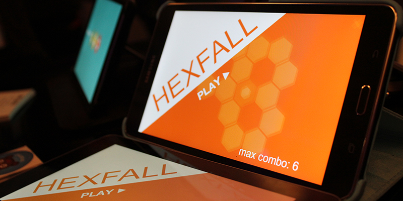

About
Hexfall was made in the late 2014, the idea is very simple, fill in all the gaps in one go, similar to q*bert. This was my first prototype made for touch devices. I wanted to learn how to make a touch device friendly game, hence I focused on a familiar gameplay. In order to mix things up a little, I added time pressure and instead of levels, I made waves which create fast paced arcade-like gameplay. Throughout the game the player has to think quickly to complete patterns, additionally new mechanics emerge as the game progresses, keeping the gameplay novel and rewarding.
The game was presented at PGC 2016 London, and it had a lot of good feedback. However, I did not continue developing it further. It was a good 2 week’s projects, and I learned a lot from it, I am hoping to release it someday.
